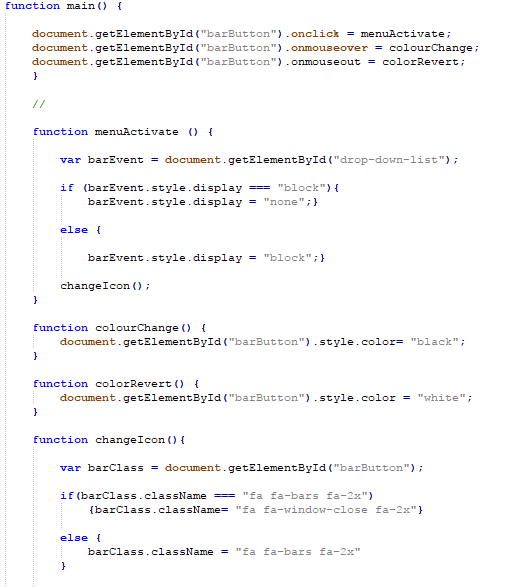

Arngren.net startet opprinnelig som en postordrekatalog på 80-tallet innen gadgeter og elektronikk, i vakuumet før internett var dette en ofte brukt salgskanal for fjernhandel. Forretningsidèen for Arngren er hobby og elektronikk,
men Arngren er ikke direkte spesialisert.
Forretningsmodell og konkurransefortrinn
Arngren sin kategorisering er veldig hummer og kanari, dette kan være en fordel iom. at dette i seg selv kan være en nisje, men det kan være en ulempe med tanke på antall konkurrenter.
Muligens kan dette forklare siden sin appell? Siden er også en tidskapsell for 90tallet rent designmessig.
Jeg mistenker også at mange av kundene hans først og fremst er folk som handler der fordi siden er stygg og barn som maser på foreldre om et flygende helikopter.
Arngren kan derfor muligens MISTE kunder ved å modernisere siden og fjerne alle gif-sene.
Det kan dog nevnes at Arngren en liten stund rundt 2000 var eid av noen andre og da satset på netthandel, resultatet ble konkurs.
Det kan ikke avdekkes en årsakssammenheng, dog noe av forklaringen kan ligge i at kundene som har fulgt Arngren ifra 80-tallet ikke var rede til et slikt paradigmeskifte.
Idag er derimot de fleste rede til å foreta netthandler, og vi har faktisk kommet så langt som Vipps og andre betalingsformer på mobil.
Gitt at denne nisjen idag er fyllt av andre bedrifter, eksempel Netthandel, Teknikmagasinet eller Finn.no, kan modernisering føre til at han mister kunder, mens
de kundene som er opptatte av nisjer uansett kan finne den relevante informasjonen en annen plass.
Søkedata for nåværende side
Hvis vi lever etter uttrykket "all PR er god PR!", så har Arngren klart seg ganske bra. Siden er ofte på listen over verdens hesligste sider.
Hvis vi går inn på Alexia.com på Arngren.net, så får vi denne
informasjonen. Mange av kundene er ikke ifra Norge, og siden har fått veldig god autoritet ut ifra backlinking, blant annet ifra Gizmodo.
Statistikk ifra Alexia.com for Arngren.net
Betalingsformer og juss
Til tross for at vi har beveget oss forbi postordre og faktura, benytter ikke denne siden paypal eller andre betalingsformer noe som kan bidra til usikkerhet for forbukeren.
Man må også summere varene selv, og selve stedet hvor man kan bekrefte kjøpet er godt skjult.
En annen ting jeg reagerer på er at han refererer til kjøpsloven på siden, dog i rundt 2002 fikk vi forbrukerkjøpsloven for å regulere forhold mellom privatperson og bedrift (Kjøpslov regulerer forholdet mellom bedrifter).
Det at han ikke er oppdatert om juss, og det at han ikke bruker et modderne betalingssystem luker ut ganske mange kunder, foruten folk som er spesielt interesserte.
Han burde modernisert dette for å oppfattes som en mer seriøs aktør.
Analyse av nettsted
Konstruksjon
Arngren sin site er lagd vha. en gammeldags sitegenerator, dette er et fy-ord grunnet visse tilfeller på 90/2000-tallet hvor tabeller ble brukt til strukturering.
Universell utforming
Nettstedet har særdeles mange bilder, animasjoner og script som kjører. Dette gjør at den laster ganske tregt, særlig på en mobiltelefon eller en datamaskin som ikke er av den kraftigste sorten.
Rent estetisk sett skaper dette også mye støy, og gjør at vi lett blir overveldet. Dette gjør at det blir et slit for visse kunder, og resultatet blir at eventuelle konkurrenter vil tjene.
Noe av det aller første jeg hadde gjort, hadde vært å kutte kraftig ned på dette, og å prøve å skape et design som passer for flest mulig enheter, eller ihvertfall gi folk et alternativ.
Navigasjon
Navigasjonsmessig får vi ikke en navigasjonsmeny (på toppen), ingen brødsmuler, og ingen tilbaketast. Vi ser heller ingen bruk av pseudo-tags for linker, verken hover, target eller visited. Dette kan gjøre det knotete å navigere seg rundt.
Jeg ville ihvertfall forsøkt å få på plass en skikkelig navigasjonsmeny og å bruke flere lenketags for at folk skal kunne vite hvilke lenker de har besøkt.
Artiklene tilbyr heller ikke en tilbakeknapp.
Det som faktisk overrasker meg er at han har en søkebar på toppen Selv om jeg mistenker at dette ikke er av den kraftigste sorten), det er bra fordi da har vi lettere for å finne frem
Bruk av bilder
På bildene har vi ingen alt-tags, tittelen er heller ikke meningsfull for de ulike sidene. For svaksynte eller folk som ikke klarer å laste alle bildene kan dette gjøre det vanskelig å vite hva bildene dreier seg om.
Særlig siden vi på forhånd ikke vet noe om hvilke som faktisk er relevante, eller hvilke som bare er til "pynt". Dette rammer også siden i forhold til SEO, siden Google-botene ikke klarer å kategorisere dette.
Hvilket verktøy er lagd?
Siden er lagd vha. en generator ganske fort og gale.
Jeg ville ha migrert systemet over til et annet CMS alternativ, deretter ville jeg funnet ut om jeg ville ha designet denne "for hånd", eller brukt en pakkeløsning.
Et alternativ ss. WordPress og Drupal gjør det lett med vedlikehold, og gjør det lett å tilpasse temaer. Dersom en person med begrensede tekniske ferdigheter som Arngren skulle ha driftet denne,
ville jeg faktisk ha foreslått en CMS-løsning.
Struktur
Siden er heller ikke veldig lineær, for eksempel er den tidligere nevnte kjøpsloven midt i en klynge, mens kontaktinformasjonen er i en annen klynge.
Det aller beste hadde vært å hatt disse i en footer,
Oppbygningen og kategoriseringen av ting er også ganske tilfeldig og ikke helt intuitiv, f.eks elektronikk i en, mens en annen seksjon har elektronikk #& dab.
Fordelen er at det muligens kan trekke folk som leser overskriftene inn, men for resten kan det bli usystematisk og vanskelig å vite hvor vi skal gå, og resulterer i mye tipping.
Det går ann å gjøre et kompromiss ved å ha et utvalg av produkter ute i noen bokser på hovedsiden, da går det også ann å større bilder.
Tilgjengelighet
Ettersom siden er lagd på 90-tallsvis, tviler jeg sterkt på denne er veldig responsiv til mindre enheter. Bildet nedenfor bekrefter min hypotese.
Et bilde av Arngren sin side etter at størrelsen på skjermen har minket
Det aller smarteste han kan gjøre er å trekke inn de tidligere rådene for oppbygning og strukturering.
Han bør også ha en ett-kolonne-prinsipp på siden, og en egen mobilmeny. Et eksempel på dette kan gjøres ved helt enkel javascript, kombinert
ved å bruke CSS-grid og flexbox (Eller ved å bruke et rammeverk som bootstrap). Et eksempel på hvordan jeg har gjort det her vises nedenfor (riktinok i SCSS).

Bilder av hvordan man kan gå på veien imot responsivitet, i SCSS og i JavaScript
SEO-strategier
Validering
Som vi kan se ifra W3C sin validator så får vi tilbake rundt 1000 feil.
Antall valideringsfeil på Arngren.net
Google og andre søkemotorer er ganske strikte når det gjelder å vise frem sider som ikke er validerte i søkemotoren,
dette henger delvis sammen med sikkerhet, buffer mot spam, og ved at den ikke ønsker å tilby brudne lenker.
Ettersom denne siden benytter inline CSS, har jeg ikke benyttet meg av validator i CSS. Inline CSS vil uansett gi feil på validatorene.
Inline-CSS opplegget hans vises i bildet nedenfor.
Et bilde av inline-CSS på Arngren sitt nettsted.
Det jeg ville ha gjort er å endre det slik at stilarket ble eksternt. Dette har også den økte bonusen av at siden er lettere å style, stilarket blir mindre, og kjører raskere, noe som også vil gi fordeler i forhold til prioritering i søkemotorer.
Metatagger
Siden er stylet ved bruk av tabeller, det er feil semantisk bruk av tabeller ettersom disse er reservert for data som skal vises frem.
Arngren sin side er lagd vha. en generator på 90-taller, og da var ikke semantikk en del av webutviklingen.
Både i forhold til et SEO-perspektiv og i et tilgjengelighetsperspektiv vil uansett dette påvirke han negativt. Jeg ville brukt både semantisk korrekte tagger, og jeg ville ha benyttet de nye HTML-5 taggene,
slik som footer, header, nav etc.
¨
Tittel
Dette har en delvis sammenheng med tilgjengelighetspunktet, men Arngren.net bruker ikke Title-taggen korrekt. '
I stedet for dette så spammes den ned med nøkkelord. Dette fungerer ikke for SEO. Det han heller kunne ha gjort er å fylle denne med et vettug innhold for hvilken side han er på (Ikke på den dumme måten, slik som Oria)
Metacontent og mer moderne
Keywords brukes feil, iogmed at mye av dette er duplikatinnhold og generelt spam. iogforseg så bruker ikke søkemotorer denne taggen, men det kan fortsatt være nyttig ift. et responsivt webdesign.
Description brukes feil, og har bare en rekke fyllord hvor mye av dette bare er duplikatinnhold.
Bildet nedenfor viser både title, metatags og hvordan det ikke skal gjøres.
Metagger og title som har blitt brukt på Arngren sitt nettsteds
Landingssidene som kommer opp om Arngren på Google vises nedenfor, siden Google ikke har fått noe fornuftig informasjon, dikter den bare noe.
I dette tilfellet blir det bare fullerør, sidene grupperes også sammen noe som er negativt for SEO siden sidene konkurrerer mot hverandre.
Lenker som fører til landingssider på Google
En annen ting som er beslektet på dette er at han kan legge inn opengraph, da får han mer kontroll over ting som deles i sosiale media.
Hvordan siden ser ut på Facebook-deling
Konklusjon
Etter all sunn fornuft ville jeg ha lagd en helt ny side ved å fylle ut de nevnte punktene.
Derimot bør han tenke seg om produktdifferensieringen ift. konkurrentene sine.
Selve forretningsmodellen til Arngren.net er myntet på dårlig design, og dette dårlige designet fører til konvertering,
og å endre dette kan fjerne hans konkurransefortrinn.

{kind=link}
{kind=link}
{kind=link}
{kind=link}
{kind=link}
{kind=link}
{kind=link}
{kind=link}
{kind=link}